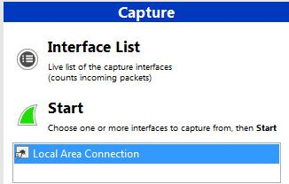

Intro duction
Welcome to the First part of the assignment that demonstrates why a message's confidentiality and integrity needs to be protected when transmitted over an insecure medium such as the Internet.
Tools
OpenSSL

OpenSSL is a software library that implements several cryptographic algorithms and associated tools and is a core component of several security solutions that rely on it such as configuring web and applications servers to support SSL/TLS.
OpenSSL is mostly used in the Linux world but for simplicity reasons we will use it in our existing dedicated Windows VM.
Wireshark

Wireshark is a network traffic capture and protocol analysis tool. It allows to persist the network traffic as it flows among end hosts and intermediate networking devices (switches, routers, network firewalls etc.). It can also process the captured bits and reconstruct and display the information back into the respective network protocol headers and payloads.
Tasks
We have installed on your system, an OpenSSL binary distribution for the Windows OS retrieved from https://www.openssl.org/related/binaries.html. Perform the following tasks.
- Create a text file in the desktop and name it after your surname as follows 'student_surname.txt'. and fill it with some English text (e.g. a news portal).
- Let us consider a fictional scenario where you represent Alice and you want to communicate with another entity, called Bob, over the network. Bob has created a simple Web page that accepts files to be uploaded.Use the browser and visit the URL 'http://cs2lab.dsv.su.se/sec/'
- Open up Wireshark. Highlight the 'Local Area Connection' network interface and press the Start button.

- You will notice captured packets filling up the main screen of Wireshark.
- Return back to the webpage you were previously. Click on the link 'Upload a File' and upload the file you had just created.
- Return to the Wireshark application and press the Stop button (Capture -> Stop). In the filter bar type HTTP (the core protocol for the Web) and press Apply.
- You should be able to notice an HTTP POST request that was submitted to the web server's /sec/upload.php URL.Highlight the entry by clicking on it and then right-click and select the 'Follow TCP Stream' option.You should be able to notice the clear text of the document you have uploaded to the web server
- Why is it a really bad practice to submit confidential data in a non-encrypted form? Why should protocols such as HTTP be replaced whenever possible by others that support encryption (e.g. HTTPS)?
- Visit the web page http://decode.org and paste the text that you have filled in the text document previously and press the Encrypt/Decrypt button. This web application employs the ROT13 cipher, a cipher similar to the Caesar's one where the English characters are instead substituted by the letter shifted 13 places in the English alphabet.
- Copy the encrypted text and paste it in a new text file and name it as follows 'student_surname-rot13.txt'
- Repeat the procedure of starting the network traffic capturing with Wireshark and uploading the new file to Bob's web server.
- Analyze the captured traffic again and notice that the data uploaded are encrypted, although using a weak algorithm
- Why is the use of a weak encryption algorithm such as ROT13 also a bad practice that can lead to confidentiality breaches? How can an attacker break a ROT13 encrypted message?
- Press on the Start button and then type in the Search field 'cmd' that stands for the Windows command line interpreter.Click on the cmd icon to open a new command line window. Type 'cd C:\OpenSSL-Win32\bin\ in order to navigate to the OpenSSL folder.'

- Type 'openssl -version' and examine the output of the supported commands and cryptographic algorithms.
- Type 'openssl enc -aes-256-cbc -p -in C:\Users\student\Desktop\student_surname.txt -out C:\Users\student\Desktop\student_surname-aes.txt -K key -iv iv'. Replace the student_surname placeholder in the filenames with your own surname. The key placeholder has to be replaced with a string of 64 hexadecimal symbols that represents the 32-byte secret key. (e.g. 000102030405060708090A0B0C0D0E0F000102030405060708090A0B0C0D0E0F) and iv has to be replaced by a string of 32 hexadecimal symbols that represents the 16-byte initialization vector (e.g. 000102030405060708090A0B0C0D0E0F)
- You can open the generated encrypted file to verify that the contents are indeed encrypted (random-looking).You can also repeat the process of capturing the network traffic with Wireshark and uploading it to Bob's web server.
- Why does the use of a longer key (e.g. AES-256 instead of AES-128) improve security (although may reduce performance)?
- What is a practical limitation of cryptosystems with symmetric algorithms with respect to the exchange of the symmetric key between the communicating entities?
- How many attempts, at maximum, would an attacker need in order to test all the possible keys against an AES-256 encrypted message?
- Asymmetric cryptography operates by requiring an entity to have two keys, a private and a public, that share a mathematical relationship between them and are called the keypair.
- Back on the command line window with OpenSSL, you can create a key pair by issuing the command 'openssl genrsa -out C:\Users\student\Desktop\myRSA.key 2048'
- You can extract additional information (prime numbers, modulus, exponents) about the generated keypair by issuing the command 'openssl rsa -text -in C:\Users\student\Desktop\myRSA.key'
- A keypair is always employed in turns (i.e. in a complementary form) meaning that if the one key from the key-pair e.g. the public) is used for encryption then only the other one from the same key-pair can be used to decrypt the message.The private key must always remain secure from being accessed by unauthorized entities while the public key is assumed to be freely distributed.
- Extract the public key from the keypair by issuing the command 'openssl rsa -in C:\Users\student\Desktop\myRSA.key -pubout > C:\Users\student\Desktop\student_surname.pub' where the student_surname placeholder must be replaced by your surname.
- Generate a new text file, named mysecret_student_surname.txt that includes a small message (an RSA key of 2048 bits is based on a modulus of 256 bytes thus the message has to be less than 245 bytes/characters given some additional padding needs). Replace the student_surname placeholder with your surname.
- Return to the main page of Bob's site. In order to encrypt the file so as only Bob can read it, we need Bob's public key. You can download Bob's public key using the link on the top right of Bob's webpage. Make sure to right click over the link and select the 'Save Link As...' option. Save the file on the VM's desktop.
- Encrypt the file by issuing the following command on the open command prompt window 'openssl rsautl -encrypt -inkey C:\Users\student\Desktop\server.pub -pubin -in C:\Users\student\Desktop\mysecret_student_surname.txt -out C:\Users\student\Desktop\mysecret_student_surname.rsa'
- Return to Bob's web page and click on the link 'Upload a Confidential File'. Select the previously generated mysecret_student_surname.rsa file and click Submit. The server should report back with the decrypted message which indicates that it was able to successfully decrypt it with its private key.
- Why is it very important for the private key to be kept secure against unauthorized access?
- Back on the Command Prompt console execute the following command 'openssl rsautl -decrypt -inkey C:\Users\student\Desktop\server.pub -in C:\Users\student\Desktop\secret.rsa -out C:\Users\student\Desktop\secret.txt'.